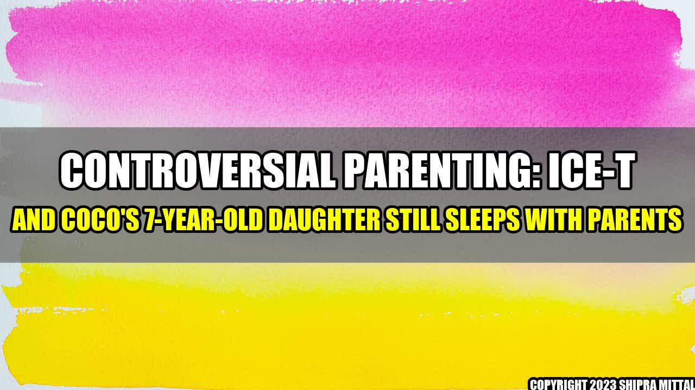

Controversial Parenting: Ice-T and Coco's 7-year-old Daughter still sleeps with Parents

Ice-T and Coco Austin are one of the most controversial couples in Hollywood. They're known for their unconventional approach to parenting, especially when it comes to their 7-year-old daughter Chanel.
What's so controversial, you ask? Well, Chanel still sleeps in the same bed as her parents. That's right, at 7 years old, Chanel has never slept in her own room.
"I know it's weird, but it's just what we do," Ice-T told The Daily Beast. "We're a very close family."
Many parents would find this behavior strange, but for Ice-T and Coco, it's just a way of life. However, their decision has raised a lot of questions from the public.
The Pros and Cons of Co-Sleeping
Co-sleeping is a controversial topic among parents, and there are arguments for and against it. Here are some pros and cons of co-sleeping:
- Pros:
- It promotes bonding between parent and child.
- It can make breastfeeding easier.
- It can improve sleep for both parent and child.
- Cons:
- It may be unsafe for the child if the parent is a heavy sleeper or has been drinking alcohol or taking medication.
- It can disrupt the parents' sleep, leading to sleep deprivation and other health issues.
- It may make it harder for the child to learn how to sleep independently.
It's important to weigh these pros and cons when deciding whether or not to co-sleep with your child. What works for one family may not work for another.
The Importance of Boundaries
One potential issue with co-sleeping is the lack of boundaries. When a child sleeps in their own room, they have a physical and emotional separation from their parents, which can be healthy for their development.
However, when a child co-sleeps with their parents, it can blur the lines between parent and child, which can lead to emotional dependency. It's important for parents to set boundaries with their children, even when they're sleeping.
Ice-T and Coco have said that they plan to transition Chanel to her own room when she's ready. Until then, they continue to co-sleep with her and set boundaries to ensure that everyone gets the sleep they need.
Practical Tips for Co-Sleeping
If you do decide to co-sleep with your child, here are some practical tips to make it easier:
- Invest in a bigger bed so that everyone has enough space.
- Use comfortable bedding to ensure a good night's sleep.
- Set boundaries with your child, such as no kicking or pushing.
- Be aware of your sleep position and avoid sleeping on your stomach.
By following these tips, you can make co-sleeping a positive experience for everyone involved.
Conclusion
Co-sleeping is a controversial parenting topic, but for Ice-T and Coco, it's just a part of their family dynamic. While there are pros and cons to co-sleeping, it's important for parents to make an informed decision that works best for their family.
Ultimately, the most important thing is to promote a healthy, loving, and secure environment for your child. Whether your child sleeps in their own room or in your bed, as long as they feel safe and loved, you're doing something right.
References:
- https://www.romper.com/p/why-7-year-old-chanel-still-sleeps-with-ice-t-coco-18017858
- https://www.parents.com/baby/sleep/co-sleeping/co-sleeping-pros-and-cons-what-parents-need-to-know/
- https://www.mamanatural.com/co-sleeping-tips/
Hashtags:
- #co-sleeping
- #parenting
- #family
- #IceTandCoco
- #Chanel
- #controversial
SEO Keywords:
co-sleeping, parenting, family, Ice-T and Coco, Chanel, controversial
Article Category:
Parenting
Akash Mittal Tech Article
Share on Twitter Share on LinkedIn